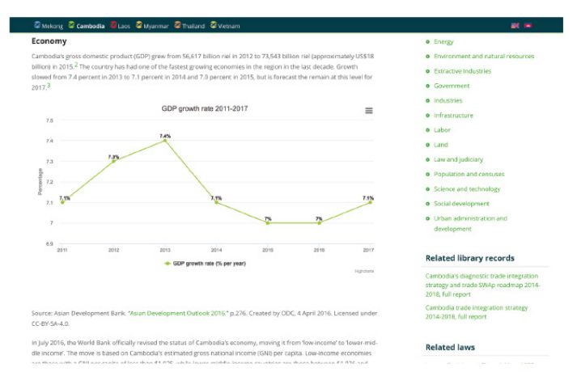
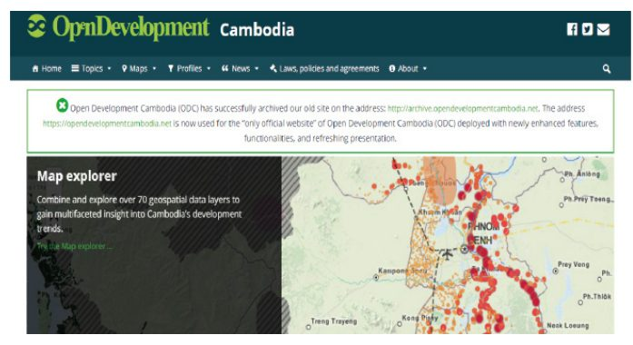
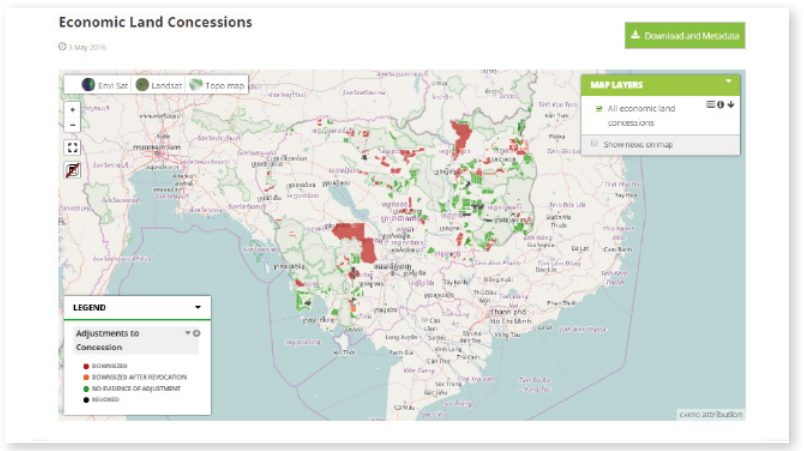
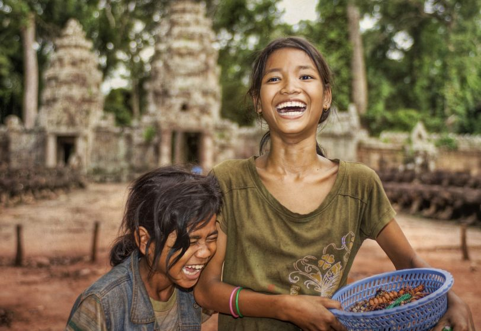

کامبوج طی ۱۰ سال گذشته پیشرفتهای چشمگیری در شرایط سیاسی، اقتصادی و اجتماعی خود نشان دادهاست. این کشور موفق به پایان دادن به سالهای طولانی جنگ داخلی، رشد حداقل ۷ درصدی اقتصاد در سال، و بهبود پیامدهای بهداشتی و تحصیلی، به ویژه برای کودکان، شدهاست. علیرغم این، ضعف اساسی در نهادهای سیاسی کامبوج وجود دارد که توسعه اقتصادی، اجتماعی و فرهنگی آن را محدود میکند. این موارد شامل ابهام رو به رشد در تصمیمگیری و فقدان اطلاعات در مورد تلاشهای مختلف توسعه در سراسر کشور است. توسعه باز کامبوج (ODC) به خاطر تمایل به پرداختن به این مسائل بوجود آمد. هدف آن، فراهم کردن «دسترسی به اطلاعات فعلی و تاریخی در مورد روندهای توسعه کامبوج در پلتفرم آنلاین ‹داده باز›» است که دادههای موجود را از طیف گستردهای از منابع عمومی گردآوری میکند. درگاه آنلاین ODC (https://opendevelopmentcambodia.net/data/) که در سال ۲۰۱۱ راهاندازی شد، ابزاری برای فراهم کردن اطلاعات برای کاربران مختلف دولت، جامعه مدنی، رسانه و بخش عمومی بودهاست.
پیشینه و زمینه
تمرکز بر مسئله / زمینه کشور
کامبوج طی ۱۰ سال اخیر پیشرفتهای چشمگیری در حوزههای سیاسی، اقتصادی و اجتماعی از خود نشان دادهاست. این کشور موفق به پایان دادن به جنگهای داخلی، رشد حداقل ۷ درصدی اقتصاد در سال و بهبود پیامدهای بهداشتی و تحصیلی، بهویژه برای کودکان، شدهاست. اما علیرغم این پیشرفتهای چشمگیر، ضعفی اساسی در نهادهای سیاسی کامبوج وجود دارد که توسعهی اقتصادی، اجتماعی و فرهنگی آن را محدود میکند. الگوهای پایدار حمایت سیاسی، اصلاحات حاکمیت را محدود کرده و تمایل دولت به شفافیت بیشتر تحتالشعاع ابهام فزاینده در تصمیمگیری نسبت به معاملات دولتی است. توانایی جامعهی مدنی برای زیر سوال بردن و پاسخگو نگه داشتن مقامات دولتی همچنان محدود، و فساد همچنان شایع است. بسیاری از این مسائل را میتوان با افزایش دسترسی عمومی به اطلاعات دولتی برطرف کرد. با این حال، کامبوج قانون آزادی اطلاعات ندارد و بسیاری از مفاد قانونی، افشای اطلاعات را محدود میکنند. برای مثال، در اکتشاف منابع طبیعی - که فساد در آن شایع است - مقررات قانونی کاربردها، گزارشها، طرحها و اخطارها را محرمانه تلقی میکنند. علاوه بر این، سازمانهای جامعه مدنی عدم موفقیت دولت در افشای جزئیات بودجهی ملی برای بررسی دقیق سیاست خارجی را زیر سوال بردهاند. به طور کلی، دسترسی محدودی به اطلاعات حاکمیتی در کامبوج وجود دارد. حتی زمانیکه اطلاعات در دسترس باشند، در قالبهایی ذخیره میشوند که اشتراکگذاری آسان و استفاده مجدد را ممنوع میکنند. علاوه بر این، اطلاعات اندکی که به صورت آنلاین وجود دارد بدون ترتیببندی، یا نامنظم هستند و پیدا کردن آنها دشوار است.
منابع دادهباز در کامبوج
در سال ۲۰۱۵، Open Knowledge Index کامبوج را ۱۲ درصد باز رتبهبندی کرد- رتبهبندی که به این معنی است که دادههای بسیار کمی به صورت آنلاین و در قالب باز موجود هستند. مجموعه دادههای مهم کلیدی مانند دفاتر ثبت شرکت، مالکیت زمین، نقشههای ملی، هزینههای دولت، آمارهای ملی و پیشبینیهای آب و هوایی به صورت آنلاین در دسترس نیستند.
تا به امروز، هیچ منبع دولتی مرکزی برای اطلاعات دولتی در کشور وجود نداشته و دولت هیچ اقدام داده باز جامعی را اجرا نکرده است. به عنوان مثال، هیچ دستورالعمل ملی برای افشای دادههای دولتی در وبسایتها وجود ندارد (اگرچه چند سازمان برخی از مجموعه دادهها را به ابتکار خود منتشر میکنند). برخی از نشانههای دلگرمکننده در پیدایش چند سازمان جامعه مدنی که در حال حاضر از منابع داده باز در کشور حمایت میکنند، مشهود است. کامبوج یکی از کشورهای مورد مطالعه به عنوان بخشی از این مجموعه است که در آن جامعه مدنی و سازمانهای بینالمللی برای اقدامات دادهباز به دلیل ناتوانی دولت در فراهم کردن دسترسی آسان به مجموعه دادههای مهم، پا به عرصه وجود گذاشتند. برخی از فعالان جامعه مدنی در کامبوج عبارتند از: کامبوج داده باز (ODC)، بنیانگذار پروژه مورد مطالعه در اینجا، و در ادامه در مورد آن بحث شدهاست. دانش باز، سازمان غیرانتفاعی داده باز جهانی؛ دفاتر محلی بانک جهانی؛ و تعداد کمی از سازمانهای شفافسازی و سازمانهای غیردولتی بینالمللی از شیوههای افشای اطلاعات فراگیرتر حمایت میکنند.
فعالان اصلی
ارائهدهندگان دادههای کلیدی
ODC دادهها را از حداقل پنج منبع اصلی - دولتی، غیردولتی، بخش خصوصی، دانشگاهی، و اتاقهای خبری محلی داخلی و روزنامههای مهم کامبوج جمعآوری میکند. ODC داده این منابع مختلف (مثلا از وبسایتها یا اسناد چاپی) را جمعآوری میکند و آنها را به فرمتهای باز تبدیل میکند تا در درگاه ODC منتشر شوند.
کاربران و واسطههای دادههای کلیدی
ODC به عنوان جمعآوریکننده دادهها و اطلاعات مختلف بهدستآمده از این منابع مختلف عمل میکند. درگاه آن دارای طیف گستردهای از کاربران است، که بزرگترین دسته آن از جامعه دانشگاهی و سازمانهای غیردولتی میآید. برای مثال، اساتید و دانشجویان به پایگاهداده ODC در مقالات تحقیقاتی، مقالات مجلات و کتابها استناد میکنند. برخی سازمانهای غیردولتی بینالمللی از طرحهای نقشه و دیگر اسناد مرجع جغرافیایی مرتبط برای تجزیه و تحلیل پروژههای توسعه استفاده میکنند. علاوه بر این، اعضای رسانه نیز از دادهها برای تحلیل روند توسعه، پروژهها و الگوها استفاده میکنند.
ذینفعان موردنظر
ذینفعان مورد نظر ODC، علاوه بر محققان و دانشگاهیان که به طور مستقیم از دادهها استفاده میکنند، میتوانند به چهار گروه تقسیم شوند. اول، سازمانهای دولتی یا سیاستگذاران که ممکن است از دادههای تحلیلشده توسط رسانهها یا NGO ها در ایجاد سیاستهای خود یا در اجرای برنامهریزی توسعه استفاده کنند. دوم، بخش کسبوکار، که از نگاه کردن به نقشهها و دادههای مرجع جغرافیایی در مورد داراییها و منابع طبیعی، و همچنین دادههای جمعیتی که ممکن است در تصمیمگیری کسبوکار مفید باشند، سود میبرد. سوم، جامعه مدنی و سازمانهای مبتنی بر جامعه از مجموعه دادههای موجود در این درگاه برای توسعه کار خود یا دفاع از شفافیت بیشتر استفاده میکنند. در نهایت، شهروندان سطح متوسط جامعه که میتوانند به داده ODC یا خروجیهای واسطههایی که در بالا ذکر شد، دسترسی داشته باشند.
شرح پروژه
آغاز فعالیت منابع داده باز
توسعه باز کامبوج (ODC) ناشی از نیاز احساس شده توسط فعالان محلی و منابع طبیعی است که در کامبوج کار میکنند. تریپرنل، یک شهروند قدیمی آمریکایی در کامبوج که با سازمانهای مردمی مختلف از جمله موسسه مدیریت شرق غرب (EWMI)، یک سازمان جامعه مدنی که به دنبال «ایجاد نهادهای پاسخگو، توانمند و شفاف» بود کار میکرد، دریافت که دسترسی به دادههای مفید در کامبوج اغلب دشوار است، البته اگر غیرممکن نباشد. دسترسی به دادههای دولتی، به طور خاص، یک چالش بود و به معنای رفتن از یک دفتر به دفتر دیگر بود که در هر مرحله با بوروکراسی سروکار داشت. همانطور که اشاره شد، کامبوج منبع مرکزی دادههای دولتی ندارد که بتوان به صورت فیزیکی از آن دیدن کرد یا به صورت آنلاین با آن مذاکره داشت.
ODC با هدف جمعآوری اطلاعات درباره کشور از منابع مختلف - نه تنها دولت، بلکه سازمانهای بینالمللی، گروههای جامعه مدنی، بخش خصوصی، دانشگاهها، موسسات دانشگاهی و محققان فردی که کشور را برای چندین دهه مطالعه کرده بودند - ایجاد شد.
گروهی که آن را مدیریت میکند باید مستقل و بدون تعصب سیاسی باشد - نقش اصلی آن ارائه اطلاعات و کمک به کسانی است که به دنبال دادهها و اطلاعات هستند و از آن برای اهداف خود استفاده میکنند. این سایت به طور رسمی در آگوست ۲۰۱۱ راهاندازی شد. پس از تقریبا چهار سال اجرا به عنوان پروژه EWMI، این پروژه در اوت ۲۰۱۵ به عنوان یک سازمان غیردولتی ثبت شد.
این پلتفرم اکنون حاوی اطلاعات برگرفته از دادهها در سه حوزه مرکزی است: محیطزیست و زمین (به عنوان مثال، فاجعه و واکنش اضطراری و صنایع استخراجی)؛ اقتصاد (به عنوان مثال، صنعت و نیروی کار) و مردم (به عنوان مثال، کمک و توسعه و قانون و قوه قضائیه). از اوایل سال ۲۰۱۷، دادههای خام به طور مستقیم برای بارگزاری بر روی قوانین، سیاستها و توافقات در دسترس هستند، در حالی که موضوعات دیگر شامل مقالات مفصل ویکیپدیا مانند جمعآوری مجموعه دادههای اولیه متنوع، نمودارها، سیاستها و سایر اطلاعات مربوطه است. ODC همچنین تعدادی نقشه تعاملی ارائه میکند که به کاربران اجازه میدهد تا لایههای ساختهشده از دادههای کشاورزی، جمعیتشناختی و زیرساخت را گسترش داده و ترکیب کنند. همچنین یک ابزار نقشهبرداری و راهنما با استفاده از رابط World Map هاروارد فراهم میکند

بودجه
ODC که در سال ۲۰۱۱ توسط EWMI به عنوان بخشی از برنامه سرمایهگذاری شده توسط USAID در مورد حقوق و عدالت راهاندازی شد، اولین کمک مالی خود را از برنامه سوئدی ICT در مناطق در حال توسعه (SPIDER) در سال ۲۰۱۲ دریافت کرد. با بودجه کلی حدود ۲۳۰٬۰۰۰ دلار، SPIDER کمی بیش از ۵۵۰۰۰ دلار آمریکا «برای توسعه سایت اثبات مفهوم موجود در یک پلتفرم آنلاین داده باز کاربردی مشارکت کرد که شبکه فعالان جامعه مدنی را برای به اشتراکگذاری، تحلیل و انتشار داده خود به شیوهای هماهنگ، برابر و ایمن تسهیل خواهد کرد.» از آن زمان، ODC از دیگر پروژههای تأمینشده توسط USAID، سرویس جهانی یهودیان آمریکا، بنیاد جامعهباز و سایر سرمایهگذاران حمایت مالی دریافت کرده است.
تقاضا و استفاده از داده
ODC دادهها را براساس آنچه که در «حوزه عمومی» موجود است جمع میکند. در حوزه عمومی، ODC به معنی دادهای است که برای دسترسی عمومی در دسترس است و به طور گسترده توسط قانون به اشتراک گذاشته نمیشود. منابع داده آن عبارتند از: ۱) روزنامههای سلطنتی، ۲) وبسایتهای رسمی موسسات دولتی، ۳) گزارشهای منتشر شده از دولت، ۴) وبسایتهای توسعهدهندگان / شرکت، ۵) اطلاعات منتشر شده به رسانهها (برای مثال اخبار و انتشارات مطبوعاتی)، ۶) گزارشهای منتشر شده از سازمانهای غیردولتی، و ۷) گزارشهای تحقیقات دانشگاهی و دیگر گزارشهای سازمانهای غیردولتی. محققان ODC دادهها را جمعآوری میکنند، آن را برای بررسی به ویراستاران ارائه میدهند و این دادهها را برای انتشار در درگاه خود به فرمتهای باز تبدیل میکنند.
استفاده از منابع دادهباز
اگرچه ODC اطلاعات را از منابع مختلف جمعآوری میکند، دادههای حاکمیتی باز محرک اصلی پیشنهادهای سایتها است. نقشههای تعاملی در سایت، مجموعه دادههای خام در دسترس برای دانلود و اطلاعات در موضوعاتی مانند کیفیت حاکمیت کامبوج، سیاست زیستمحیطی و کدهای ساختوساز بدون در دسترس قرار گرفتن دادههای دولتی امکانپذیر نخواهد بود.

تاثیر
هدف و ماموریت ODC «تقویت دانش عمومی و تحلیل مسائل توسعه است تا گفتگوی سازنده بین بخشهای عمومی، خصوصی، جامعه مدنی و بینالمللی را قادر سازد تا از توسعه سیاستها و شیوههای موثر مربوط به استفاده از منابع پایدار حمایت کند.» این سازمان در حال حاضر سه سال است که تلاش میکند تا به این اهداف دست یابد. اگرچه سنجش تاثیر، به ویژه برای پروژههای نسبتا مبتدی، همیشه دشوار است، اما تحقیق ما نشان میدهد که حداقل چهار مسیر وجود دارد که طی آنها ODC گامهای اولیه به سمت داشتن تاثیر عینی بر جامعه کامبوج و توسعه برداشته است.

ردهبندی دادههای باز کامبوج با استفاده از روش علاقه به دادن منابع
درگاه ODC توجه بسیاری از کاربران مختلف را به خود جلب کردهاست. تا اکتبر ۲۰۱۶، این سایت به طور متوسط ۷۰۰۰۰ صفحه در ماه داشته است. از زمان راهاندازی این درگاه، در مجموع ۳۵۰۰۰ کاربر در ماه، عمدتا از داخل کامبوج، از این سایت بازدید کردهاند که تقریبا ۸۰ درصد آنها بازدیدکنندگان منحصر به فردی بودهاند. تیم ODC که در پنومپن مستقر است، درخواستهای شخصی و ملاقاتهای مصاحبه متعددی را از روزنامهنگاران و محققان دریافت کردهاست، و این درگاه به طور فزایندهای به عنوان منبعی در نشریات تحقیقاتی محلی و بینالمللی و گزارشهای رسانهای نقل شدهاست.
براساس تلاش تایتی، مدیر اجرایی ODC، «اغلب، نقشهها بیشترین توجه را از رسانهها و افراد GIS به خود جلب میکنند، در حالی که پایگاهداده پروژههای سرمایهگذاری و امتیاز همراه با منابع را دنبال میکند که معمولا طرفداران و کارگران سازمانهای غیردولتی و سازمان مبتنی بر جامعه از آنها استفاده میکنند. در این مفهوم، به نظر میرسد که ردیابی پایگاهداده در پروژههای توسعه خاص به تدریج به کار این سازمانها کمک میکند. با این حال، این امر مستلزم آن است که افراد کلیدی جوامع درک بهتری از روندهای توسعه و ابزار داده / اطلاعات داشته باشند تا بتوانند از آن با بیشترین تاثیر، چه از طریق کار مستقیم خودشان و چه از طریق اشتراک دانش با اعضای جامعه خود، استفاده کنند.»
روزنامهنگاران از رسانههایی مانند گاردین، رئیس فناوری، و نیویورک تایمز، در میان دیگران، در مورد تلاشهای ODC نوشتهاند و/یا از دادهها و اطلاعاتی که در دسترس قرار میدهد استفاده کردهاند. آنها همچنین شامل سازمانهایی مانند سازمان ملل متحد، کمیسیون رودخانه مکونگ و ائتلاف بینالمللی هستند. علاوه بر این، ODC میگوید که سازمانهای دولتی نیز از این سایت استفاده کردهاند - شاید با توجه به تمرکز آن بر کنار هم آوردن مجموعه دادههای مفید از بخشهای مختلف، و نه فقط دادههایی که قبلا توسط دولت نگهداری میشدند، تعجبآور نباشد.
تقویت طرفداری از موضوع از طریق همکاری
ODC نقش مهمی در تقویت طرفداری از مسائل مربوط به داده باز ایفا میکند، نقشی که تاثیر آن در نحوه اعطای زمین توسط دولت مشهود است. پیش از ظهور ODC، طرفداران جامعه مدنی که کمک دولت به امتیازات زمین را مشاهده میکردند، دادههای خود را جمعآوری کردند و با یکدیگر هماهنگ نبودند. این پراکندگی منجر به ناسازگاری در دادههای ارائهشده توسط این فعالان مختلف، تضعیف پیامهای طرفداری، و عدم توجه سازمانهای دولتی مربوطه شد. ODC فرآیند به اشتراکگذاری دادهها را تسهیل میکند، داده را پاک میکند تا از تناقضات خلاص شود و داده را در پلتفرم امن و متمرکز فراهم میکند. با یک پایه و صدای واحد، همراه با پوشش رسانهای بینالمللی و فشار، دولت اعطای امتیازات زمین به بخش خصوصی را به تعویق انداخت و اعطای امتیازات زمین اجتماعی به فقرا را تسریع کرد. اگرچه نمیتوان این نتایج را مستقیما به ODC نسبت داد، اما کاملا مشخص است که ODC به این فرآیند کمک کردهاست.
افزایش دسترسی به دادههای مهم و غیرقابلدسترس قبلی
در کامبوج، گزارشهای ارزیابی اثرات زیستمحیطی (EIA) در دسترس عموم قرار نمیگیرند. EIA ها طبق قانون موردنیاز هستند، اما به نظر نمیرسد که چندین سازمان در این عمل اهمیت دهند. ODC گزارشهای EIA را در درگاه خود فراهم کرد و تحلیل دادههای EIA موجود را انجام داد. افزایش حاصل در آگاهی عمومی در مورد این موضوع، به ویژه در میان فعالان جامعه مدنی، این پتانسیل را دارد که دولت را وادار به انجام اقدامات بیشتر کند، اگرچه شواهد روشنی وجود ندارد که آنها این کار را در این نقطه انجام دادهاند.
علاوه بر این، دادههای منابع طبیعی، از جمله اطلاعات مربوط به کشاورزی - یکی از مزیتهای رقابتی کامبوج - به سختی به دست میآیند. ODC در گذشته درخواستهای متعددی برای دریافت اطلاعات مربوط به نوع خاک در پورتال خود داشت و اخیراً توانست این کار را انجام دهد. این اطلاعات توسط بخش خصوصی، به ویژه توسط فدراسیون برنج کامبوج، برای تعیین مناطق بالقوه رشد در تولید محصول استفاده شد. شواهد حکایتی همچنین نشان میدهد که دادههای منابع در پورتال ODC توسط سازمانهای بینالمللی مانند بانک جهانی و ANZ استفاده شده است.
ریسکها
ODC از زمان آغاز به کار خود با چالشهای متعددی روبرو شدهاست، از جمله فقدان حمایت و حتی مقاومت از جانب سازمانهای دولتی و فعالان بخش خصوصی خاص. به عنوان مثال، زمانی که ODC داده پوشش جنگلی را در سال ۲۰۱۳ منتشر کرد، سازمان جنگلداری، نهاد دولتی وزارت کشاورزی، پرورش و شیلات، داده ODC را که کاهش قابلتوجهی در پوشش جنگلی نشان داد - از ۷۲ درصد در سال ۱۹۷۳ به ۴۶ درصد در سال ۲۰۱۳ - رد کرده و ادعا کرد که این سازمان روش کاربردی معتبری برای طبقهبندی جنگل ندارد. تلاش برای بیاعتبار کردن ODC، مانند این مورد، احتمالا دوباره اتفاق خواهد افتاد، مخصوصا زمانی که دولت توسط روایتهای ناشی از تحلیل داده حساس آسیب میبیند.
وقتی ODC به یک سازمان جامعه مدنی ثبتشده در کامبوج منتقل میشود، ممکن است با چالشهای متعددی روبرو شود که با تصویب قوانین جدید میتوان محدودیتهایی را بر کار ODC تحمیل کرد. برای مثال، قانون انجمن و سازمانهای غیردولتی نیازمند آن است که همه سازمانهای غیردولتی فعالیتهای خود را به دولت گزارش دهند - که منجر به حجم کار بیشتر و محدود کردن آزادی حرکت از طریق نظارت میشود. همچنین، فرمان انتشار نقشهها و استفاده از نقشههای تولیدشده، الزام جدیدی را معرفی میکند که هر سازمانی که نقشه تولید میکند باید از دولت مجوز بگیرد. علاوه بر این، پیشنویس قانون جرایم سایبری میتواند به طور بالقوه به برخی از فعالیتهای ODC آسیب برساند. همه این موارد نشاندهنده ریسکهایی برای سازمانی است که به دنبال معرفی شفافیت بیشتر و کار علیه منافع مقرره است. در یک معنا، مقیاس ریسکها (و مخالفت) نیز نشانهای از موفقیت پروژه یا حداقل پتانسیل آن است.
درسهای آموخته شده
چندین درس مهم با قابلیت کاربرد گسترده از این مطالعه موردی خاص حاصل میشود.
این موارد را میتوان با در نظر گرفتن توانمندسازهای اصلی پروژه، و همچنین مهمترین موانع یا چالشهای موفقیت آن دستهبندی کرد.
توانمندسازها
اعتماد نقشآفرینان مختلف به کار و ظرفیت ODC
توانایی ODC برای استفاده از اکوسیستم موجود، حرکت آن از ایده به اجرا را سرعت بخشید. این حقیقت که ODC به عنوان یک پروژه تحت EWMI و با حمایت چندین حامی بینالمللی شروع به کار کرد، شهرت خود را به عنوان سازمانی تقویت کرد که قابلیت انجام تعهدات خود - چشمانداز و ماموریت خود - را دارد. موضع «مستقل» ODC، داده و اطلاعات واقعی را ارائه میکند که بدون اتصال خود به هر دستور کار یا ایدئولوژی سیاسی جمع میشود و هم بر روی دولت و هم بر روی فعالان دیگر کار میکند. به طور کلی، ذینفعان دولت خصومت خود را علیه ODC اعلام نمیکنند و حتی با وجود پرسشهای اولیه در مورد یکپارچگی داده، از داده آن استفاده میکنند. گروههای مدافع ODC را به عنوان یک سازمان مستقل و نه لزوما یک مکانیزم دولتی میبینند.
این افزایش اعتماد فعالان مختلف، توانایی ODC برای دریافت کمکهای مالی برای تامین مالی کار و عملیات خود را ممکن ساخت.
جنبش داوطلبانه فعالان مختلف در فضای داده باز
مانند هر تکنولوژی جدیدی که نه تنها به سخاوت اهداکنندگان بلکه به داوطلبان وابسته است، ODC از افراد مختلفی که در تلاشهای ODC برای آشکارسازی فعال بدون هزینه مشارکت میکنند و از سازمانها و دانشگاههایی که کارآموزان را به ODC میفرستند تا در فرایندهای تحقیق و ویرایش به آنها کمک کنند، بهره میبرد. ODC یک تیم بسیار ضعیف دارد - نه نفر روی تحقیق، ویرایش، اینفوگرافیک، نقشهبرداری، نوشتن، تامین مالی کار میکنند - و برای افزایش وسعت و عمق کار خود، باید فرصتهای داوطلبانه را تبلیغ کند و تا حد لزوم داوطلبان زیادی را جذب کند.
همکاری میان فعالان مختلف در داخل کامبوج
همانطور که قبلا گفته شد، ODC برای انتشار اطلاعات جامع و با کیفیت در درگاه خود به منابع داده مختلف وابسته بود. سازمانهای غیردولتی، گروههای طرفدار، محققان، دانشگاهها و سازمانهای دولتی داده را با ODC برای پاککردن، ویرایش و انتشار به اشتراک گذاشتند. بدون همکاری این فعالان، دادهها در درگاه ODC از نظر دامنه کمتر از وضعیت فعلی آن است و احتمالا برای کاربر معنیدار نیستند.
فقدان اطلاعات، نیاز به این همکاری را تقویت میکند. در حال حاضر، افراد بیشتر و بیشتری به داده مربوط به زمین، آب و حاکمیت جنگل علاقمند هستند و از ODC خواستهاند تا این مجموعه داده را برای عموم قابلدسترس کند. ODC همچنین در همکاری کوتاهمدت با دانشکده امور عمومی و بینالمللی دانشگاه کلمبیا (SIPA) برای درک بیشتر تلاشهای توسعه بینالمللی در کامبوج شرکت کرد.
مشارکت با Save Cambodia's Wildlife اطلس کامبوج ۲۰۱۴ را تولید کرد که اطلاعات و نقشههای دقیقی را در مورد «ساختارهای فضایی در حال تغییر جغرافیای کامبوج و همچنین توسعه اقتصادی و اجتماعی آن، به ویژه مدیریت منابع طبیعی و محیطزیست» ارائه میدهد - عناصر موجود در Atlas در ODC قابل دانلود هستند و به صورت لایه روی نقشههای تعاملی آن در دسترس هستند.
موانع
قالب و کیفیت دادهها
ODC تصدیق میکند که دادهها و اطلاعات در حوزه عمومی به سختی به دست میآیند چون برخی دادهها محدودیتهای قوی در توزیع مجدد، نشر و استفاده مجدد دارند. بسیاری از منابع داده دولت ناسازگار هستند، به روز نیستند، و در فرمتهای بسته (به عنوان مثال، PDF ها) قرار دارند. به گفته پنلیک چان، مدیر پشتیبانی مشارکت و شبکه منطقهای طرح توسعه باز EWMI:
«یک چالش این است که بسیاری از اسناد منتشرشده توسط دولت در حوزه عمومی قابل خواندن با ماشین نیستند، و بنابراین دیجیتالیسازی و تجزیه و تحلیل آنها بسیار وقتگیر است. چالش دیگر این است که دادهها و اطلاعات همیشه سازگار نیستند، بنابراین نیاز به داشتن یک تیم بازبینی مستقل و بیطرف وجود دارد که دادهها را م نطقی کند. به عنوان مثال، در پروژهای که در آن ما گزارشها تولید لاستیک در کامبوج را بررسی کردیم، ارقام ارائهشده توسط دو وزارتخانه مختلف در مورد شاخص یکسان تا حد زیادی متفاوت بود.» این محدودیتها کار ODC را دشوارتر و منبع - محور میکند.
پایین بودن سواد اطلاعاتی کاربران محلی
همانطور که قبلا اشاره شد، سازمانهایی که تا حد زیادی از قابلیت دسترسی به اطلاعات سود میبرند، سازمانهایی هستند که هماکنون ظرفیت دسترسی و استفاده از سازمانهای رسانهای بینالمللی داده و سازمانهای غیردولتی بینالمللی را دارند. این امر عمدتا به این دلیل است که سواد اطلاعاتی پایینی از سوی کاربران محلی وجود دارد. برای حل این مشکل، ODC آموزشهای ظرفیتسازی متعددی را در سراسر کشور انجام میدهد، اما با توجه به کمبود منابع، توانایی پوشش بخشهای مختلف در سراسر کشور محدود است
نگاهی به آینده
وضعیت فعلی
ODC معتقد است که کار آن به طور غیرمستقیم بر سیاستها و اصلاحات اخیر دولت کامبوج در بخش جنگلداری و امتیازات زمین تاثیر گذاشته است. این امر را میتوان در تعداد رو به رشد مناطق حفاظتشده طبیعی، توسعه طرح مدیریت مناطق حفاظتشده، معرفی گردشگری اکولوژیکی، کاهش حدود ۱ میلیون هکتار امتیازات زمین اقتصادی از سرمایهگذاران غیرفعال و اعطای مالکیت زمین به فقرا از طریق امتیازات زمین اجتماعی مشاهده کرد. این رویدادهای اخیر، ODC را به تلاش بیشتر برای دسترسی بیشتر به داده برای عموم مردم و ذینفعان نیازمند تشویق کردهاست.
اما ODC تایید میکند که چالشهای مهمی برای دستیابی به این نتایج وجود دارد - به خصوص با فضای بسیار محدود برای جامعه مدنی در فرایندهای سیاسی کامبوج. از آنجا که ODC میخواهد جایگاه مستقل خود را حفظ کند، به سازمانهای دیگری وابسته است که دادهایی را میگیرند که ODC میتواند آن را در فرایندهایی آشکار کند که بر روش آشکار شدن توسعه در کامبوج تاثیر میگذارد. این میتواند سازمانهای جامعه مدنی، گروههای حمایتی، یا سازمانهای مبتنی بر جامعه علاقهمند به مسائل خاص، مانند حاکمیت منابع طبیعی باشد. این میتواند گروههای نظارت بر شفافیت باشد که به دنبال آشکار کردن فساد در بخش دولتی هستند. حتی میتواند قهرمانان درون دولت باشد که میخواهند یک مدل توسعه پایدارتر برای کشور ببینند.
در این فرایندها، ODC باید حداقل دو نقش ایفا کند - یکی دفاع از باز بودن بیشتر داده عمومی و دیگری حمایت از یک موسسه منبع که ظرفیت فعالان محلی برای استفاده موثرتر از داده در تصمیمگیری را ایجاد میکند. ODC متعهد میشود تا اطمینان حاصل کند که فرایندهای تصمیمگیری در مورد داده - محور نه تنها در زمینههای دولت بلکه در هر جامعه در کشور نهادینه میشوند.

نتیجهگیری
در حالی که اکوسیستم داده باز کامبوج هنوز در مراحل ابتدایی خود است، توسعه باز کامبوج به عنوان یک رهبر مهم در سوق دادن کشور به سمت یک رویکرد شفاف، مشارکتی و داده محور برای حاکمیت عمل میکند. علاوه بر نشان دادن اهمیت در دسترس قرار دادن دادههای دولتی مهم برای عموم - از قراردادهای باز و دیگر اطلاعات قانونی گرفته تا سرشماری و داده جمعیت شناختی تا بینش به تغییرات در پوشش جنگلی در کشور - ODC ارزش در نظر گرفتن دیدگاه گستردهتری از این که چه نوع دادهای میتواند مفید باشد اگر باز و قابلدسترس شود را مشخص میکند. ODC به جای تکیهبر دادههای دولت برای ارائه داده و نقشهها، از ابتدا به دنبال جمعآوری اطلاعات مربوطه از بخشهای مختلف بود تا دیدگاه چندوجهیتری از موضوعات مورد توجه مردم کامبوج فراهم کند. همانطور که سایت و اکوسیستم داده باز کامبوج به رشد خود ادامه میدهند، حس بهتری به دست میآوریم که آیا تاثیر بارز ODC تاثیر مثبت بیشتری بر زندگی عمومی در کشور خواهد داشت یا خیر.